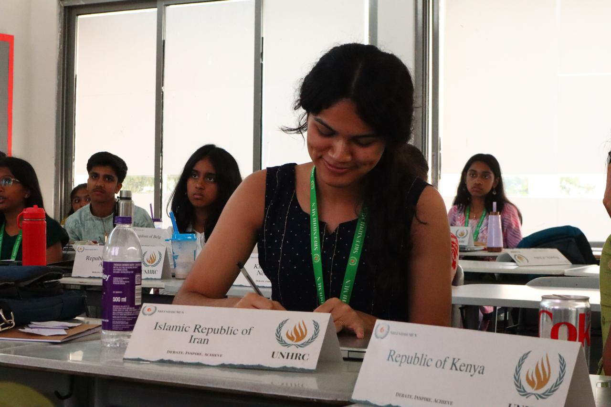

About the Committee
The Junior United Nations Commission on the Status of Women empowers young delegates to address global challenges affecting women and girls. Through diplomacy and collaboration, participants debate issues such as gender equality, education, healthcare, and women's empowerment while developing public speaking, negotiation, and leadership skills in a beginner-friendly MUN environment.
Agenda
- Addressing global conflicts and peacekeeping operations
- Sanctions and international enforcement mechanisms
- Security implications of emerging technologies
Background Guide
Download the official background guide for this committee: UNSC Background Guide (PDF)
Executive Board

Vice-Chairperson: Mahika Tyagi
Mahika Tyagi, a 12th grader at DPS Hyderabad, entered the MUN circuit four years ago and has since participated in numerous conferences, winning several awards and earning recognition for her energetic and passionate debating. With a deep commitment to international relations and human rights, she loves fighting for what’s right. Outside the world of MUNs, Mahika can often be found raving about Formula 1 or acting like Spotify is her second home. A proud extrovert, she’s always up for meeting new people, making terrible jokes, and somehow finding someone to laugh at them. As Vice-Chair, she’s committed to ensuring that this edition of DPSH MUN is both a meaningful and enjoyable experience for every delegate.

Vice Chairperson: Akshaini Sinha
Short bio of the vice chairperson goes here.